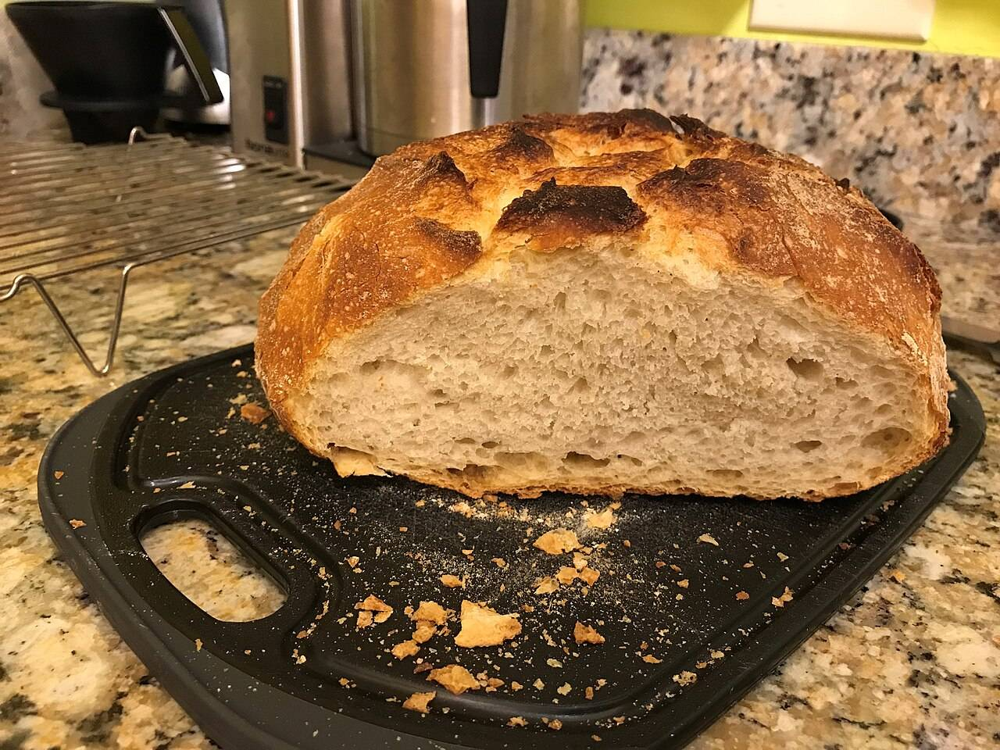
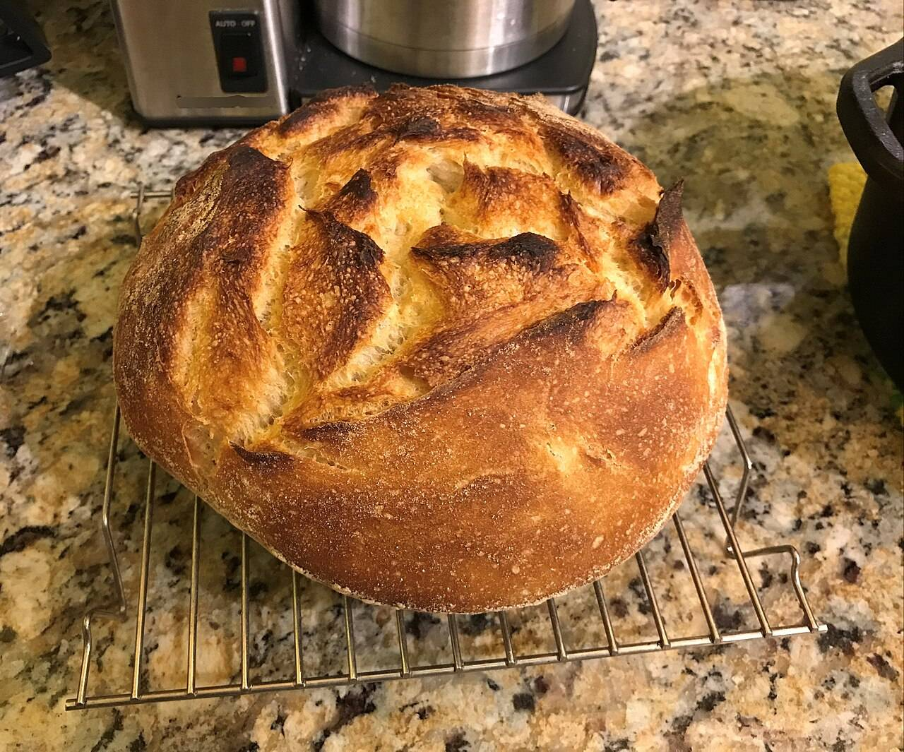

店のこと
確認できていること
お店について、いま確認できているのは所在地とInstagramだけです。ほかは準備中です。
確認済み
所在地とInstagram
〒593-8301 大阪府堺市西区上野芝町2丁目8-12
Instagram: @solana_bakery
営業時間・定休日・メニュー・ご予約・駐車場は準備中です。分かり次第、貴店ご提供の情報に差し替えます。
制作側の連想
部位の配置図というつくり
各ページは、圧電ブザーの図に添えた六つの部位名の考え方でまとめています。制作側の連想で、お店の理念・由来とは無関係です。
- 1ケース圧電素子をおさめる、丸い樹脂の外殻。
- 2放音孔ケースの上面にあいた、音を外へ出すための穴。
- 3金属振動板薄い金属の円盤で、ふるえて空気を押す部分。
- 4圧電セラミック振動板に貼った円盤。電気を受けるとわずかに伸び縮みする。
- 5リード線ケースの下から出る、電気をつなぐための二本の線。
- 6極性表示+側がどちらかを示す、ケース上の小さな印。
ギャラリー(イメージ)
パンとコーヒー豆の写真




写真はパンやコーヒー豆のイメージです。お店のものではなく、お店で提供している商品を示すものでもありません。